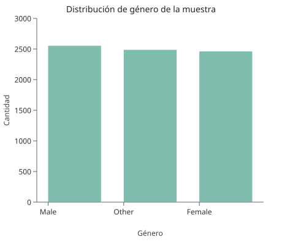
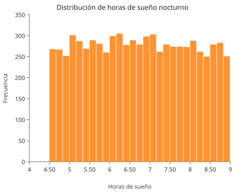
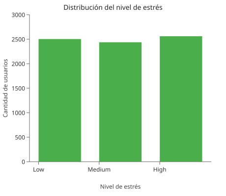
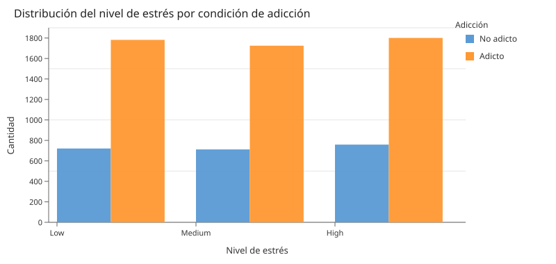

Visualizaciones Interactivas ODViz

Distribución por Género
La distribución de género es relativamente equilibrada entre Male, Female y Other, lo que reduce el sesgo en el análisis y permite comparaciones confiables entre grupos.

Distribución del Sueño
La mayoría de los usuarios duerme entre 5 y 8 horas. Un grupo que duerme menos de 5 horas podría estar relacionado con el uso excesivo del smartphone durante la noche.

Nivel de Estrés
El nivel de estrés se distribuye equilibradamente entre Low, Medium y High, lo que permite explorar su relación con otras variables sin que una categoría domine el análisis.

Pantalla y Sueño
A mayor tiempo de pantalla, menor cantidad de horas de sueño. Los usuarios con mayor nivel de adicción se concentran en zonas de alto uso y bajo descanso.

Socialización y Estrés
El uso de redes sociales está distribuido en todos los niveles de estrés. Los usuarios con estrés alto muestran mayor dispersión, sugiriendo una posible vinculación emocional.

Estrés vs Estado de Adicción
Los usuarios clasificados como adictos tienden a concentrarse en niveles de estrés medio y alto, evidenciando una posible asociación entre adicción al smartphone y aumento del estrés.

Visualización Multivariable
Cinco variables simultáneas: pantalla, sueño, redes sociales, adicción y estrés. Los usuarios con adicción severa se concentran en zonas de alto uso de pantalla y bajo sueño.